Södermalm i tid och rum
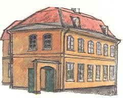
Det är inte bara en del av en gård från västra Södermalm som finns på Skansen. Även östraSödermalm är representerat där. Den vackra Tottieska malmgården från Bondegatan 63-65 flyttadesdit och var färdiguppförd sommaren 1935. Den gula tvåvånings hörnbyggnaden av sten ligger istadskvarteret alldeles intill Hasselbacksporten. Den har som tidigare tjärstrukna socklar och ett takbrutet i två fall. Tyvärr är gården inte fullständig. Endast den representativa delen har flyttats. Innanden kom till Skansen hade den sedan år 1773 legat på yttersta Söder i närheten av Barnängen, vilketnamn senare skulle komma med i gårdens historia.
| 1668 kom skotten Thomas Tottie till Sverige och fick plats hos tobaksfabrikören Jakob Hoving. Snartöppnade han eget. Han hade fjorton barn och av dem intresserar oss sonen Charles Tottie. Denne varsom fadern affärsman och hade därigenommedel att år 1759 av köpmannen och kommerserådet Thomas Plomgrens arvingar köpa en gårdvid Stora Bondegatan. | 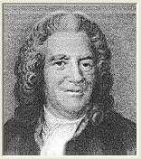 Charles Tottie | Den gården blev honom snart för liten, men eftersom han i början inte själv bodde på sin gård utanhade en trädgårdsmästare som arrendator räckte den till. De första ägarna, handelsmannen AndersCossar och Thomas Plomgren, som köpt gården på stadsauktion 1737, hade också haft enträdgårdsmästare som hyresgäst. |
| 1765 låter Tottie murmästaren Johan Wilhelm Friese sätta igång med byggnadsarbeten, men detskulle ta tio år innan byggandet var avslutat då huset uppfördes i två omgångar.Malmgården blev vacker och storslagen. På en situationsplan från 1816 ser man trädgårdensfyrkantiga kvarter med grönsakskällare och biljard (vid N:o 6) samt iskällare och damm. På andrasidan Bondegatan fanns ytterligare en trädgård med lusthus och damm för karp och ruda. I trädgårdenfanns allt som borde finnas på en fin malmgård. Där växte 37 pomeransträd, tio fikonträd, femmullbärsträd, valnötsträd, lager och myrten. Ett fågelhus, en s k volière, samt ett persikohus byggdesäven i trädgården. | 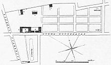  |
Utöver manbyggnaden (A) ser man på situationsplanen vid B den del som inrymde stall för niohästar, ladugård för tre kor, hönshus och kuskkammare m m. Orangeriet som är N:o 4, är ritat av ErikPalmstedt och underligt nog uppfört utan byggnadstillstånd. Vagnshuset är N:o 5.
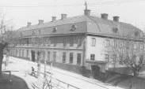  | 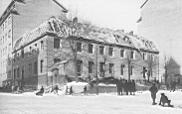  | 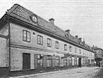  |
År 1773 var gården färdig och Charles Tottie gjorde sin älskade malmgård till fideikommiss ochbrandförsäkrade den år 1774 för 244 500 riksdaler. Tottie hade år 1746 grundat Stockholms StadsBrandförsäkringskontor, så det var ju självklart med en brandförsäkring på hans egen malmgård.
En så stor egendom krävde en stor tjänarstab. År 1770 är trädgårdsmästare, tre drängar, en gosse, tvåpigor samt timmermansänkan Maja Norman, som "skiöter kreaturen", mantalsskrivna härute.
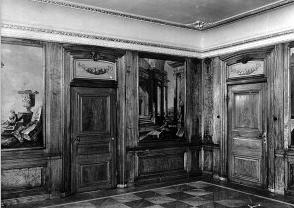 | Inte bara gården var storslagen utan även inredningen och möbleringen. Charles Tottie vargift med bröderna Jakob och Abraham Arfwedssons syster Maria. Bröderna och Charles Tottiehade tillsammans grundat handelshuset Arfwedsson och Tottie 1771. Firman hade kontakter medVästindiska Kompaniet, och då det fanns fina dyrbara träslag i Västindien beslöt Tottie att inredade förnämsta rummen i sin malmgård med mahogny och västindisk ceder. Denna ceder var intelika fin som den som kom från Libanon utan användes som förpackningsmaterial för råsocker.Den kallades också för sockerkist. Detta träslag samt den ännu finare Cubamahognyn användesnu till väggbeklädnad.
Takhöjder, liksom dörr- och fönsterplaceringar är troligen gjorda av murmästare Friese ochinredningsarkitekten har därför varit tvungen att arbeta inom de givna ramarna. Troligen var detJean Erik Rehn som utförde detta arbete åt Charles Tottie. De målade dörröverstyckena kan varautförda av målaren Johan Pasch. |
I regel ville man i Sverige under slutet av 1700-talet ha ljusa väggar och ljusa träslag i möbler,allt enligt den franskinfluerade smaken. Charles Tottie däremot, vars far kom från Skottland, hadeen annan smakinriktning. Hans hem hade alltså både inredning och möbler i mörka träslag. Men låt oss gå vidare bland ägarna och senare återkomma till möblerna. Charles Tottie dog1776 och hans änka Maria Arfwedsson flyttade då från huset vid Skeppsbron ut till malmgården.Charles Tottie hade i fideikommissbestämmelserna klargjort att den som var verksam inomhandelshuset även skulle bli fideikommissarie. I nästa släktled var detta inget problem. AndersTottie tog över handelshuset men fick tillträda malmgården först när han var 55 år. 1816, då Anders Tottie dog, blev det annorlunda. Han var barnlös och gården ärvdes av brorsonenCarl Tottie. Denne varinte verksam inom handelshuset Arfwedsson och Tottie. Han kunde alltså sälja egendomen ochden köptes av kryddkramhandlanden N Holmlund Nu följde en tid av förfall och ägarna avlöste varandra. Här var väverier och andra småindustrieroch ingen skötte den vackra trädgården. Först år 1868, när Barnängens Tekniska Fabrik tillträdde,blev det en förbättring. Både byggnader och tomt rustades. | 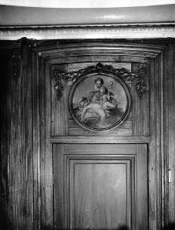 |
.
I mitten av 1800-talet bildades i Jönköping en liten firma för tillverkning av bläck. År 1868 togägaren, kamrer J F Ögren, kontakt med grosshandlare Johan Wilhelm Holmström i Stockholm. Dessabildade en ny firma, som hyrde lokaler i Tottieska malmgården. Adressen var Stora Bondegatan 39.Fastigheten omfattade tomterna Barnängsbacken och Barnängen mindre. Namnet gav sig självt.Firman ombildades senare till familjebolag, men vid det laget hade Barnängens Tekniska Fabrik köptgården. Här inrymdes fabrik, kontor och disponentbostad från år 1868 fram till slutet av 1920-talet dåfirman flyttade till Alvik.
Då började den tredje perioden i den gamla gårdens historia. Huset rustades upp av ingenjör NilsBackman, direktör på Barnängen och barnbarn till Holmström, och förhoppningen var att det skullefå ligga kvar på sin plats trots anstormningen av nya höga hyreshus. Så väl var det inte. Redan efterett par år blev det åter förändringar, men kanske blev den slutliga lösningen ändå den bästa.
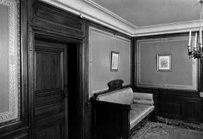 | Byggmästare Olle Engqvist ringde 1930 upp Nordiska Museet och erbjöd de gamlarumsinredningarna från Tottieska malmgården som gåva. Skansen höll samtidigt på och letade efterett 1700-tals stenhus för att kunna ge en enhetlig bild åt stadskvarteret. De tog alltså i stället tacksamtemot hela huset, men det skulle ändå bli dyrbart då inga möbler fanns. Genom frikostiga donationerav byggmästare Olle Engqvist, direktör Robert Ljunglöf, disponent Nils Westerdahl samt StockholmsStads Brandförsäkringskontor kunde dock både flyttning och inredning slutföras. Brandförsäkringskontoret räknade inte bara Charles Tottie som sin grundare, utan denne hade ävenekonomiskt räddat kontoret efter några eldsvådor på 1750-talet, varför detta äreminne nu blev ettsenkommet tack. |
| Frågan blev sedan hur man skulle klara möbleringen. Vilka typer av möbler som behövdes varinget problem. Det fanns nämligen två mycket utförliga bouppteckningar, den ena efter Charles Tottieoch den andra efter hans hustru Maria Arfwedsson. Förbluffande för århundradet var attbouppteckningen nästan genomgående upptog mahognymöbler, men med tanke på Charles Tottiesstarka bindning till England var det kanske helt naturligt med engelskinköpta möbler. Engelsmännenvar ju mest tilltalade av mörka möbler.
Med bouppteckningarna tillgängliga kunde man sedan plockafram en del ur Nordiska muséets magasin. Resten inköptes. Året var 1932. Efter Kreugerkraschen utbjöds mängder av antikviteter till relativt låga priser och bland dessa kundeman nästan exakt hitta vad man behövde. I sängkammaren, där möbelplaceringen kanske förvånar men överensstämmer med den förtiden riktiga, finns ett stort svartmålat skrivbord som vi vet är detsamma som användes av CharlesTottie. Här finns också ett reseschatull av ek för brännvinsflaskor och glas. Även detta lär hatillhört Tottie. | 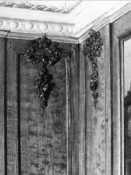 |
Två märkvärdigheter som inte hör dit finns inom Tottieska malmgården på Skansen.Första rummet i bottenvåningen är fullhängt med tavlor, så som man ofta hade det på 1700-talet.Bland dessa finns Pehr Estenbergs Årstatavla, som Årstafrun, Märta Helena Reenstierna, 1798 fick igåva av konstnären och som hon var så stolt över. Estenberg lånade senare tavlan för kopiering ochlämnade aldrig tillbaka den. Den återfanns sedan av Nordiska muséet hos en antikhandlare ochplacerades på den Tottieska malmgården.
Den andra märkvärdigheten är Lolotte Stenbocks bibliotek, men rummet där detta förvaras öppnasinte vid vanliga visningar. Det innehåller drottning Lovisa Ulrikas Svartsjöbibliotek samt tolv porträttav "lärda fruntimmer i Frankrike". Den samlingen ärvdes av dottern, prinsessan Sofia Albertina. Alltsammans gick sedan vid prinsessans död till hennes överhovmästarinna Lolotte Stenbock (f Forsberg).Sofia Albertina betraktade nämligen Lolotte som sin halvsyster, dvs dotter till konung Adolf Fredrikpå sidolinjen. Boksamlingen har sedan sammanhållits som lösörefideikommiss inom släkten Stenbockoch deponerats på den Tottieska malmgården.
När man ser vad som återstår av den gamla gården, där den ligger i stadskvarteret på Skansen, önskarman bara att man hade kunnat se den när den var som vackrast, i en stor välordnad trädgård, som vartill både glädje och nytta för husets innevånare.
| Ur Sjutton Skansenhus berättar om Stockholm, Arne Biörnstad, 1998 TOTTIESKA MALMGÅRDEN ÄR ett stort gult stenhus som blickar förnämt ner på sina rödmåladeträgrannar i Skansens stadskvarter.Det har en viss aristokratisk slutenhet som förstärks av att gatufasaderna saknar portar. Enbesökare måste gå in på gården för att hitta entrén.Det intrycket stämmer nog väl med intentionerna hos husets byggherre på 1760-talet.Grosshandlaren Charles Tottie skapade sig ett privat sommarparadis på det avlägsna Södermalm.Dit kunde han dra sig från det brusande affärslivet på Skeppsbron20, där han hade både kontoroch vinterhem. | 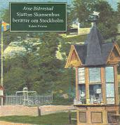 |
Av sommarparadiset kan huset på Skansen bara visa en inomhusdel. Det är bostadsrummen somCharles och Maria Tottie inredde åt sig själva i gårdens östra flygel. Den inredningen blev avsådan klass att ingen senare ägare av huset ville ändra eller skada den. Den skyddade sig självgenom sin kvalitet.Men resten av det stora huset gav man sig på i olika omgångar. Man ändrade, rev och byggde tillalltefter ägarnas skiftande uppfattning om hur huset borde användas. Också trädgården fick sin delav förändringarna. Resultatet blev en lång historia om hur ett stycke mark i Stockholm kunnat användassedan slutet av 1600-talet. Vi skall följa skeendet från början.
Den 5 juni 1674 skrevs ett fastebrev på den fastighet vars öden vi nu skall följa. Riktigt vad somstod i brevet är inte lätt att veta, därför att det årets handlingar saknas i stadsarkivet. Men det ärtroligt att markägaren var den nyblivne kommissarien i Kammarrevisionen Jacob Wolimhaus,som året därpå gifte sig med Anna Catharina Thegner och senare adlades under namnet Gyllenborg. Han gjorde sig känd och hatad som en av Karl XI:s dugligaste medhjälpare vid reduktionenpå 1680-talet.
Kanske han behövde en viss avkoppling från reducerandet genom att ägna sig åt trädgårdsplanering.Ett resultat måste han ha nått, även om vi inte vet något om dess detaljer. Det är glest mellankälluppgifterna från den här perioden. Men det blev en trädgård, som togs över 1709 avträdgårdsmästaren Petter Paulson.
Gyllenborgs son, lagmannen Olof, dyker upp som ny ägare 1717, men säljer redan året därpå till en handelsman Anders Corsar. Mantalslängden1731 från Katarina församling ger oss uppgiften att Anders Corsars hus och Trägård hyrs avträdgårdsmästaren Jonas Öhman med dess hustru. Det är den första källa som berättar att detfanns ett hus på tomten, som då kallades kvarteret Berget.
Corsar sålde 1737 sin egendom till den trettiofemårige handelsmannen Thomas Plomgren.Han var en uppåtgående stjärna i Stockholms borgerskap. Tillsammans med sin bror Anders hadehan 1730 bildat en grosshandelsfirma, som snabbt blev en av de största exportörerna av järn ochimportör av bland annat spannmål och vin. Dessutom ägnade Plomgren sig framgångsrikt åt bådekommunal- och rikspolitik som en av de ledande i hattpartiet. Han blev handelsborgmästare,kommerseråd och talman för borgarståndet. Affärsverksamheten gjorde honom till en av Sverigesrikaste män. Bouppteckningen 1754 slutade på nästan 1.750.000 daler kopparmynt. Till de fastatillgångarna hörde ett fyravånings stenhus vid Södermalms torg och ett trevånings vidSkeppsbron förutom ett antal egendomar på flera håll i landet. Egendomen som just nuintresserar oss kallas i bouppteckningen för »malmgården på Södermalm med dertil hörandeTrägård och Iskällare«.
| Den lakoniska beskrivningen säger inte något om boningshuset medan däremot iskällaren omtalas.Den kommer vi att möta i fortsättningen. Dock är det klart att där fanns ett ordentligt hus att bo i.Mantals- och taxeringslängder talar om skatt för 12 fönsterlufter. 1743 hade det bestämts atthusägare skulle betala en särskild skatt i proportion till antalet fönster de hade.Vi kan anta att här låg ett hus av den på Söder vanliga sorten - ett timmerhus. Och med 12 fönsterbör det ha varit ganska stort, antingen en parstuga med extra kammare i änden eller eventuellt enparstuga i tvåvåningar. Det var inte någon ståndsmässig sommarbostad för en herre som Plomgren, men passandeför de trädgårdsmästare vilka fick hyra både hus och trädgård. Den förste var Anders Hedman och därefter Johan Lundström. Den senare hade 1746 blivit antagensom mästare i Trädgårdsmästarsocieteten i Stockholm, efter att ha gått igenom vederbörliga prov. Hanvar visserligen »inte alldeles fullkomlig i trädbeskärning, men i öfrigt försvarlig«. Societeten varorganiserad som andra hantverksyrken under skråtiden och Lundström var en period utsedd somungbroder på Södermalm; en syssla som innebar att han skulle sammankalla ämbetsbröderna till deåterkommande stämmorna. På Peter Tillaei trädgårdsrika stockholmskarta från 1733 fanns det många arbetsplatser för JohanLundström och hans kolleger, inte minst i Katarina församling, där hans eget arrende på kartan fåttnamnet »Gyllenborgs«. Det var ett namn som skulle få vika för ett annat.
Sedan Thomas Plomgren dött behöll hans arvingar gården i någraår, men 1759 såldes den till Charles Tottie. Han hörde liksom Plomgren till de rika grosshandlarna påSkeppsbron. Fadern hade 1688 flyttat från Skottland till Sverige och arbetat sig fram som tobaksfabrikör och handlande. | 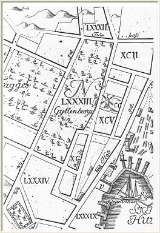  |
Charles Tottie utvecklade tillsammans med sin bror William fadernsverksamhet och utökade den med grosshandel av stångjärn, tjära, bräder och andra skogsprodukter,som exporterades framför allt till England. Deras firma var under 1750- och 1760-talen den största iStockholm, och Charles Tottie fick flera förtroendeuppdrag inom Grosshandelssocieteten. Han räknasdessutom som den egentlige grundaren av Stockholms stads Brandförsäkrings-kontor. Och när kontoret på 1750-talet drabbades av betalningssvårigheter efter svåra bränderkunde Charles Tottie personligen rycka in och låna ut de pengar som behövdes.
För honom var det inte någon stor sak att köpa en sex tunnland stor trädgård på Söder. Hansplaner för hur egendomen skulle utvecklas växte efterhand, som vi skall se, men han tog detvarligt i början.
Tomten han köpte kallades då Barnängsbacken och låg emellan nuvarande Bondegatan,Åsögatan och Erstagatan. Den motsvarar kvarteren Oljan, Lampan och Gruvan tillsammans med mellanliggande delarav Sågar-, Plog- och Duvnäsgatorna. Det blev en närmare 300 meter lång tomt i öst-västlig riktningmed sin högsta punkt i det nordöstra hörnet. Därifrån sluttade den svagt mot väster och starkt ned motsöder. En sådan södersluttning bör ha varit ganska idealisk för en trädgård.
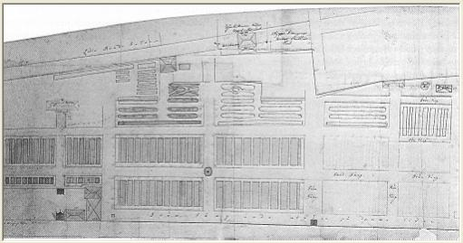  |
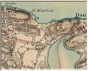  1861 1861 |
Hur området såg ut 1759 kan vi inte veta med säkerhet, men det finns en osignerad ritning som måstevara gjord efter 1766, då tjärkullraren Anders Appelroth byggde sig det hus som syns på den lillanordliga grantomten. Ritningen visar hela Barnängsbacken med ett rätvinkligt system av gångaroch odlingsytor, indelade i en mängd sängar eller rabatter. Tyvärr finns inte någon text somförklarar vad som är verklighet och vad som är vision i den. För det är tydligt att den är gjordmedan både byggande och planering pågick.
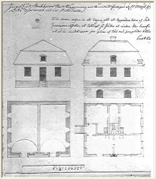  | På norrsidan, väster om Appelroths tomt, ligger ett litet kvadratiskt hus, det första som CharlesTottie lät bygga. Ritningen till det godkändes 1763 av Stockholmsstads Ämbets- och Byggnings Collegium. Ett envånings stenhus med två stora välvda källare »tillgrönsakers och rotsakers förvarande«. Den ena källaren hade en kakelugn som kunde värma båda valven. Därnäst i tur stod manbyggnaden. Den 28 februari 1765 signerade murmästaren Johan Wilhelm Frieseen ritning till manbyggnad, som »Herr Grosshandlaren Charles Tottie var sinnad att av sten låta byggapå dess gård«. Ritningen visar ett envåningshus med två flyglar och ett med frontespis markerat mittparti, rusticering på flyglar och frontespis samt ett brutet tak med ett par små vindskupor. På ritningen är antecknat att man till att börja med skulle bygga endast yttersta delenav östra flygeln och en del av huvudbyggnaden öster om den blivande inkörsporten. Vi vet inte om det fortsatta byggandet tog en paus efter första ansatsen eller försiggick i flera etapper.Mantalslängden 1770 talar om »Grosshandlaren Hr Carl Totties trä och malmgård, samt nyastenhusbyggnad«, vilket tyder på att åtminstone exteriören var färdig vid den tiden. Hela projektetfördes troligen till slut senast under 1773. Den första brandförsäkringen togs året därpå. |
| På trädgårdsritningen hittar vi hus nere i vänstra hörnet. Där ligger dessa två delar avmanbyggnaden med ett trähus inklämt mellan sig. Det kan knappast förklaras på annat sätt än attträhuset fanns på platsen och av någon anledning inte revs genast för att ge plats åt det nya stenhuset. Trädgården är omgiven av plank med en större port intill den nybyggda delen av boningshuset.En tom gårdsplan skiljs med staket från trädgården. Via en grind leder en trädgårdsgång fram tillplatsen för ett blivande orangeri. Vi vet inte om det fortsatta byggandet tog en paus efter första ansatsen eller försiggick i flera etapper.Mantalslängden 1770 talar om »Grosshandlaren Hr Carl Totties trä och malmgård, samt nyastenhusbyggnad«, vilket tyder på att åtminstone exteriören var färdig vid den tiden. Hela projektetfördes troligen till slut senast under 1773. Den första brandförsäkringen togs året därpå. | 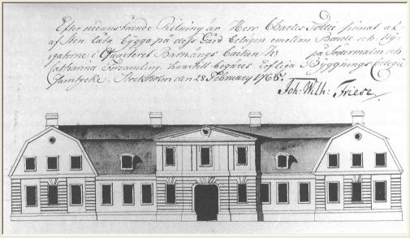  |
I sitt gemensamma testamente 1773 hade Charles och MariaTottie bestämt att malmgården med vissa inventarier skulle vara fideikommiss inom släkten Tottie, såatt äldste sonen i nedstigande led skulle bli fideikommissarie, men endast om han åtog sig att sköta dethandelskontor som testatorn själv hade inrättat. Om vederbörande inte vore hågad för handel, såskulle nästa son träda till. Och om det vore så illa att dentilltänkte arvtagaren inte ville ha malmgården, så skulle han ha rätt att sälja den, men endast för atti stället köpa en annan fastighet på landet, vilken då skulle bli fideikommiss, »som aldrig får bortgåifrån Tottieska släkten, så länge någon manlig descendent lefwer, som bär namn af Tottie ochwistas inom Riket«.
Äldste sonen, brukspatron Anders Tottie, var nu 55 år och en mycket väletablerad person med egenfastighet i kvarteret Överkikaren vid Hornsgatan. Han hade inte någon anledning att bosätta sig imalmgården.Men han tog emot fideikommisset och utnyttjade det förmodligen både som sommarställe och somleverantör av trädgårdsprodukter till det egna hushållet. Jungfru Agneta Westberg bodde där i varjefall 1795 och husjungfrun Magdalena Malmberg till 1800. Det skulle de knappast ha gjort om inteägarna tyckt sig ha nytta av deras tjänster i huset.
Det permanenta boendet på platsen var det nu trädgårdsfolket som svarade för. Att trädgården sköttessakkunnigt var man uppenbart mån om. UnderAnders Totties tid avlöste tre trädgårdsmästare varandrasom anställda och trädgårdsdrängarna varierade mellan tre och fyra.
Anders Tottie dog barnlös 1816 Brorsonen Carl Tottie stod i tur att ta över som fideikommissarie.Men han var brukspatron på Älvkarleö och inte intresserad av Barnängsbacken. Därför lät han värderaegendomen. Rådhusrätten förordnade fyra herrar att granska hus och trädgård. De kom fram till attfastigheten var värd 16 000 riksdaler banko. Den såldes och därmed var den tottieska malmgårdstidentill ända.
I bouppteckningen efter Anders Tottie den 31 oktober 1816 står att egendomen sålts tillkryddkramhandlaren Nils Holmlund för 17 000 riksdaler. Holmlund, som i senare handlingarkallas grosshandlaren och riddaren, fick emellertid inte fastebrev förrän i mars 1819. Hanbodde med hustru i eget hus i kvarteret Latona vid Västerlånggatan.Det är inte lätt att veta ifall han köpte Barnängsbacken som sommarnöje eller på spekulation.
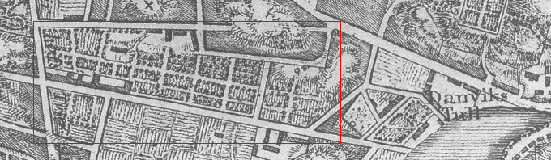
1805
Trädgården arrenderade han ut till Gabriel Nyström som 1818 efter vederbörliga prov hade blivit förklarad förmästare och medlem av trädgårdsmästareämbetet.Redan 1824 sålde Holmlund egendomen till den 25-årige klädesfabrikören Johan Isac Röhl. Itaxeringslängden året därpå finner vi Röhl boende i Barnängsbacken 1 tillsammans med enklädesvävargesäll, en överskärargesäll, två spinnerskor, tre plyserskor, en lärling och en spolgossesamt diverse familjemedlemmar och tjänstefolk.
Malmgården har för första gången blivit fabrik, men bara i liten skala. Väverier av detta slag lyddeunder den s.k. Hall- och Manufakturrätten och i dess fabriksberättelse för 1825 står att Röhl hade 3vävstolar, 2 skrubb- och 2 kardmaskiner, 3 mekaniska spinnrockar och ett överskäreri med 4 saxar.Med 4 gesäller och 14 andra arbetare producerades under året 2 536 alnar fint och 1 195 alnarmedelfint kläde.
Trädgården har åter igen bytt arrendator. Nu är det trädgårdsmästaren Albert A. Fogelström somdriver den med hjälp av två drängar. De fick besök den 17 maj. Den dagen skrev Årstafrun i sindagbok: »Blåst och kyligt ehuru solen var lysande. Trädgårdsmästaren var till Totties trädgård ochfick 4 grenar Pyramidal Popell som sattes vid alla 4 hörnen af Rud-dammen.« Totties trädgård hade kvar sin dragningskraft.
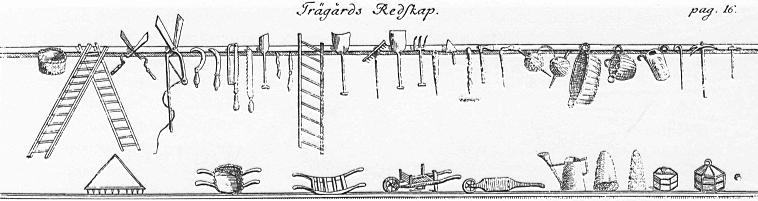
Huset fick fler hyresgäster. KällarmästarenBonaventura Winckler bodde där med sin son liksom en sidenvävargesäll och en sidenväverska.Johan Isac Röhl klarade inte riktigt av att driva klädesväveri. Han gick i konkurs redan 1827. Detblev dags för en ny värdering i februari 1828. Allt blev besiktigat på nytt i närvaro av två gode mänför borgenärerna, Nils Holmlund och fabrikören Gotthard Wilhelm Marcks von Würtemberg. Denhär gången stannade värdet på 13 583 riksdaler och 32 skilling banko. Sedan blev det auktion och1830 finner vi återigenkryddkramhandlaren Nils Holmlund som ägare. Och märkligt nog, den andre gode mannen Marcksvon Würtemberg drivande klädesväveriet i huset. Antalet vävstolar har ökats till fyra. Han sysselsätter21 arbetare och 7 barn och tillverkar 1830 2 829 alnar fint och 246 alnar medelfint kläde.
Ungefär en tredjedel av de anställda bodde i huset, där också antalet hyresgäster ökat till 8 familjereller ensamstående. Bland dem den nye trädgårdsarrendatorn Anders Fredrik Edberg med tre drängar.1835 bor grosshandlaren Nils Holmlund själv i huset och »uppger sig icke drifva Rörelse«. Trädgårdenarrenderas detta år av Lars Bergqvist, trädgårdsmästare sedan 1818 och med flera förtroendeuppdraginom ämbetet.
Klädesväveriet har övertagits av fabrikören Carl Göransson junior, men tillverkningen och antalet arbetare har minskat. Göransson bor i huset med sin familj. En före detta färgstoftsfabrikör, enrepslagerifabrikör, en bomullsfabrikör och en skräddaregesällsänka är hyresgäster.I maj 1835 dör Holmlund och i oktober köper Göransson gården av sterbhuset. Fem år till lyckas handriva sin fabrik, men i juni 1840 blir det konkurs. I januari 1841 kommer värderingsmän för tredjegången. 16 666 riksdaler och 32 skilling banko anser de egendomen vara värd. Då ingriper CarlGöransson senior, som inte maktlöst vill se på hur sonen misslyckas. Själv har han i 26 år innehaftapoteket Svanen och skaffat sig en mycket solid ekonomi. Han hade Zinkensdamm som sin malmgård.Nu köper han också Totties. Den testamenterar han till sina barnbarn att disponeras efter bådamakarnas död, men förordnar att sonen Carl får bo där hyresfritt tills vidare.
Carl Göransson senior går till sina fäder 1844 och hans änka Petronella Göransson blir ägare tillTotties, där sonen bor kvar. Nu får trädgården uppleva en stor omläggning i och med att den arrenderas ut till tobaksplanteuren Petter Andersson, som bor därmed sin familj och två drängar. Han betalar 533 riksdaler i årligt arrende. Det torde vara under hanstid som den stora vagnboden inrättas som tobakstorklada och två torklador till byggs bredvid den.
1850 har också Petronella Göransson gått bort och apotekaren C. O. Utterström sköter malmgårdensom målsman för sina barn. De har nu ärvt gården efter morfar Carl Göransson.Klädesfabriken upphörde 1840, men redan några år därefter har en annan verksamhet övertagitlokalerna. I Handels- och Ekonomikollegiums Firmabok 1798-1857 är antecknad 1844 en firmaNordenmalm L. E. & Co. »Under denna firma idkas fabrik för Chemiska tändstickor af L. E.Nordenmalm.«
Chemiska tändstickor var just vid denna tid inte något entydigt begrepp. Dittills avsågs i regelfosfortändstickor, som innehöll gul fosfor och kunde tändas genom strykning mot nästan vilken ytasom helst. De var alltså mycket eldfarliga och 1843 utkom en förordning om att de bara ficktillverkas i stenhus i avlägsna och mindre bebodda trakter i huvudstaden. Redan året därpå fickemellertid kemisten Gustaf Erik Pasch patent på sin uppfinning av säkerhetständstickan, som barakan tända mot ett plån av röd fosfor.
Vi vet inte vilken sorts tändstickor som tillverkades på Barnängsbacken, om det varfosfortändstickor eller om fabriken fått rätt att tillverka de patenterade säkerhetständstickorna.Vilka det än var - sålda blev de uppenbarligen. Enligt 1855 års mantalslängd sysselsätts 10 arbetareoch 33 arbeterskor med tillverkningen. Och fabrikören Nordenmalm har sålt rörelsen till grosshandlaren Carl Daevel.Tobaksplanteuren Petter Andersson har dragit sig tillbaka och ersatts av bandfabrikören M.Lundin, som hyr trädgården och en lägenhet i huset. Hyresgäster är också en såp- och ljusfabrikör, en f.d. bokhandlare, en jernarbetarehantlangare och 7 till.
Perioden 1816-55 blev malmgården förvandlad till först klädesväveri, sedan tändsticksfabrikmedan trädgården delvis övergick till att bli tobaksplantage. Samtidigt flyttade allt fler människor inför att bo i huset. Allt detta satte sina spår, särskilt i husets övervåning. Där slogs flera rum i västradelen ihop till 5 fabriksrum. Ett kök tillkom, men i övrigt lämnades inredningen orörd.Bottenvåningen hade fått tre kök och 11 rum och i fägården hade ett utrymme förvandlats tillpresshus. Där stod förmodligen en stor skruvpress i vilken klädet pressades.
1856 såldes gården till Johan Eric Westerberg. Han kallas i handlingarna omväxlande mjölnare,lantbrukare, possessionat och f.d. arrendator. Han är 53 år gammal, handlingskraftig och haruppenbarligen köpt Barnängsbacken 1 på spekulation. Han sätter direkt igång med att bygga ombåde i manbyggnaden, en del av fägården och det lilla stenhuset vid Lilla Bondegatan enligtinlämnade ritningar. Ombyggnaden går ut på att dela upp husen i så många rum och lägenhetersom möjligt. När allt är klart tecknas en ny brandförsäkring och av den framgår att Westerberglyckats åstadkomma 36 rum och 13 kök i manbyggnaden, 3 rum och 1 kök i fägården och 7 rum och3 kök i det lilla stenhuset.

{kind=link}
Westerbergs halva hus innehåller 12 lägenheter. På det sättet fyller det kraven. Och hälften avlägenheterna är på ett rum och kök. Resten är tvårummare, men skulle mycket väl kunna ha varitenrummare de också, ifall där inte satts in enkla skiljeväggar, som delar in ytan i två rum på 9respektive 14 kvadratmeter. På det viset skulle det kunna bli lättare att ha inneboende somhjälpte till med hyran. Då kan man sätta hyran litet högre och strunta i lån frånFattigbyggnadsfonden. Så kanske Westerberg resonerat.
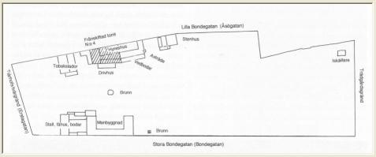  Renritning av plan år 1860 över Barnängsbacken i Brandförsäkrings-kontorets arkiv. Renritning av plan år 1860 över Barnängsbacken i Brandförsäkrings-kontorets arkiv. | Nog fick han hyresgäster efter allt byggandet. Mantalslängden 1860 tar upp 48 familjer ellerenskilda som boende i malmgårdens ursprungliga hus. Tillsammans blev det 131 personer och närtvillinghuset vid Lilla Bondegatan tillkommit är vi uppe i 205. Den inneboende lantbrukaren i Westerberg gjorde sig påmind. I november 1859 ber han att fåuppföra ett växthus enligt inlämnad ritning. |
Johan Fredrik Ögren i Jönköping lyckades på 1850-talet uppfinna ett bra sorts bläck och startadetillsammans med en kompanjon en liten fabrik i hemstaden för tillverkningen. Bläcket var utmärktmen affärerna slutade med konkurs. Efter rekonstruktion fortsatte verksamheten fram till 1868, dåkompanjonskapet upplöstes och Ögren sökte sig till Stockholm.
Den 11 september 1868 antecknas hos Handels- och Ekonomicollegium att J. F. Ögren driverfabriksrörelse under namnet Barnängens Tekniska fabrik. Detsammastår det också i mantalslängden 1871 för Barnängsbacken 1, där Ögren slagit sig ned med hustru,barn, pigor och fabrik. I fabriken sysselsätter han ett dussintal personer, av vilka de flesta bor ihuset. Själva fabriken måste på något sätt ha fått plats i fägårdsdelen, eller möjligen i denlägenhet som hyrdes av en grosshandlare Johan Wilhelm Holmström.Dessa båda herrar samarbetade för att driva upp firman, men hade problem med att skaffa erforderligtkapital. Holmström lyckades intressera en tredje person, Severin Dahlberg, som satsade 30.000 i detnya företaget och ingick som kompanjon. Den 28 juli 1871 registreras Barnängens Tekniska fabrik på Holmström och Dahlberg. Ögrenlämnar Barnängen och övertar i stället tändstickstillverkningen från firman L E Nordenmalm &Co.
Året 1871 ter sig nästan kaotiskt på den gamla malmgården. I husen på Barnängsbacken 1 och 4bor sammanlagt 237 personer. En av familjerna är förre ägaren Johan Eric Westerberg med son,dotter, piga och två drängar. Han arrenderar nu trädgården. Fabriken har ännu så länge bara etttiotal anställda, men man anar att den har växtkraft. De flesta av arbetarna bor i huset.En av dem, Johan Larsson, har en hustru Johanna, som »idkar handel i bod i detta hus« ochsadelmakeriarbetaren Carl Gustaf Olsson har också en handelsbod i huset, var nu de kan ha fåttplats.
I januari 1872 köps fastigheten av handlanden E. J. Hane som redan samma månad sänder enansökan till Handels- och Ekonomikollegium om att få insätta en Kalorickmaskin i det lågastenhuset vid fägårdens norra sida. Dessutom ber han att få ta bort två stenväggar i bottenvåningenav den västra flygeln »och i stället anbringa hvalföppningar för inredningen af en störrefabrikssal«. Han vill också sätta upp en spis i stället för två kakelugnar en trappa upp i en annanfabrikssal. Allt detta gör han för att hjälpa sin svärson på traven. Hans dotter Emma Carolina ärnämligen gift med Johan Wilhelm Holmström.
I september året därpå är Hane tillbaka med en ny ansökan. Nu gäller det att bygga ett mindrehus mot norra gaveln av västra flygeln. Där skall bli pannrum och kokas tvål i tre väldigajärnpannor. Malmgården är definitivt på väg att förvandlas till fabrik i större skala än tidigare. IDet började med bläck, som gavs ut till Barnängens 75-årsjubileum 1943, citeras en skrift från 1873som berättar om fabrikens första fem år. »På denna korta tid har den vunnit en för hvarje vän afden svenska industrien glädjande utveckling. Det vidsträckta utrymmet är trots de rymliga magasinerna ej längre tillräckligt, och grunden håller nu på att läggas till en nybyggnad, afsedd för en tvålfabrik i stor skala. Det är ett nöje att vandra genom dessa arbetssalar med deras i allo prydliga anordning och att der åse den idoga och händiga arbetaremängdens lifliga verksamhet. Intrycket förlorar ingalunda något af sittbehag, derigenom, att man vet, det dussintals familjer hafva sitt uppehälle af det arbete som här utvecklas. Äfven utom fabrikens område sträcka sig de välgörande verkningarna af deras verksamhet, ty dess betydliga behof af askar och dylikt fylles genom hemarbeteaf i trakten boende qvinnor och barn. För bearbetningen af det virke, som härtill är behöfligt,begagnas en varmluftsmaskin af större dimensioner än vanliga.«
Affärerna gick tydligen bra och 1875 var Johan Wilhelm Holmström i stånd att lösa in fabriken frånsvärfadern. Fabriken hade nu vuxit så att den sysselsatte 25 personer. Arbetstiden räckte från 6 påmorgonen till 7 på kvällen med avbrott för två matraster.
| 1877 kände Holmström sig så hemma på Barnängsbacken att han unnade sig att försköna trädgårdengenom att uppföra ett lusthus. En ritning inlämnades och godkändes, och så byggdes lusthuset mittemellan manbyggnaden och drivhuset, dvs. det gamla ombyggda orangeriet.Brandförsäkringen beskriver det som »8-kantigt af sten 20 fot i diameter och till takfoten 14,5 fothögt, innehållande ett 11,5 fot högt rum med jernkamin, fotpaneler, oljemålade väggar, 2 nischer derafen medhyllor och oljemålat gipstak. Öfver yttertaket som är täckt med zink, en på utvändig oljemåladspiraltrappa af trä tillgänglig 9 fot hög altan, täckt med asfaltpapp.«Försäkringen avstår från att söka skildra de små krusidullerna som pryder takets 8 vinklar, spiran medunionsvimpeln och, icke att förglömma, den lilla vinkelböjda skorstenen genom en av takets bärande pelare, som skall avleda röken från jernkaminen. Detblev i sanning ett lusthus för vårt något osäkra klimat. Holmström var mycket djurintresserad och i trädgården lät han bygga en hel liten djurpark medburar för björnar, rävar, påfåglar, örnar, falkar och flera andra fåglar. Ur detta djurintresse växte idénfram att låta en björn bli Barnängens fabriksmärke. | 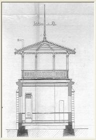  |
Trädgårdsepoken fick sitt slut på Barnängsbacken 1882. I april styckades kvarteret Barnängsbackentill tre kvarter, Oljan, Lampan och Gruvan, och mellan dem planerades framdragningen av Sågar- Plog- och Dufnäsgatorna. Antagligen ville Holmström genom försäljning av tomter skaffa sig kapitalför att genomföra ett kommande större projekt.
I oktober 1884 sände han en serie ritningar till Stockholms Stads Byggnadsnämnd. De är tyvärrosignerade, så det är inte möjligt att veta vilken arkitekt Holmström anlitat. Det är intressant att sedessa ritningar som ett exempel på hur man tyckte sig kunna behandla en äldre byggnad. Varkenbyggherren, arkitekten eller byggnadsnämnden såg huset som något annat än ett råmaterial att anpassaefter behov.
Planen är inte liten. Den går ut på att förvandla malmgårdens hela västra halva, inklusive den inregården, till ett enda hus med två våningar, källare och vind. Byggytan är ca 570 kvadratmeter.Vånings- och takhöjder är helt anpassade efter det gamla husets mått, men fasaden in emotgården har getts en för tiden karakteristisk utformning med rusticerad bottenvåning, lisener mellanfönstren i övervåningen och tre stora vindskupor på taket.
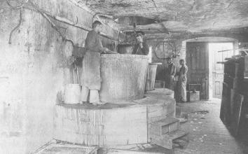  Tvålkokeriet 1894 Tvålkokeriet 1894 | Detta bygge blev aldrig av. Visserligen sålde Holmström tre tomter i kvarteret Lampan, menpengarna räckte väl inte till en så stor investering, som detta tillbygge skulle ha inneburit.Den stora planen blev grundarens sista kraftyttring inom företaget. 1885 lämnade handisponentskapet till sin svärson, Carl Axel Backman, och året därpå avled han. Carl Axel Backmanvågade sig heller inte på den stora planen utan nöjde sig med att bygga på tvålkokeriet med envåning mot gaveln på östra flygeln 1889. Men tillverkningen och antalet anställda växte kontinuerligt. 1890 arbetade disponent, fabrikör, kassör, kamrer, 4 kontorsbiträden, 3 handelsresande,verkmästare, tvålmästare, 14 arbetare, 24 arbeterskor och 1 bodmamsell i företaget. Fabrikören varEric Holmström, en son till grundaren som nu inträtt i firman. Han bodde i det lilla stenhuset somCharles Tottie byggde först. Nu hette det Lampan 1 med adress Åsögatan 96.I den gamla manbyggnaden hade fabrikationen utträngt nästan allt boende. Där finner vi endastdisponenten Carl Axel Backman med familj samt kusken J.A. Hellgren, portvakten MathildaSvensson och arbeterskan Sofia Westman. |
Mot slutet av seklet sökte man lösa en del av sina lokalproblem genom att bygga på det gamla fähusetlängst i väster med en våning, sätta in två stora kokpannor och bygga en ny stor skorsten utanpå huset.Den gamla portgången i västra längan sattes igen och förvandlades till bläckfabrik. De två små husenutefter Bondegatan slogs ihop till ett och blev lokal för flasksköljning.
| Ute på tomten byggdes 1898 ett 24 meter långt och 12 meter brett plåtskjul med tegeltak somlagerlokal. Detta fungerade fram till slutet av första världskriget. Då hade det blivit för trångt i östraflygelns bottenvåning där kontoret hela tiden hade varit inrymt. Genom att bygga ett nytt trapphus ihörnet mellan huvudbyggnaden och östra flygeln kunde det gamla trapphuset tas i anspråk. Ibottenvåningen vann man ett kontorsrum och en trappa upp fick disponenten en hall som entré till sinvåning. Dessutom kunde man klämma in ett badrum i den gamla övre förstugan. Det varen lyx som chefen dittills varit utan. Kontorsdelen rationaliserades också betydligt. En nyhet på ritningen från 1917 är att man inrättattvå små särskilda skrivmaskinsrum, där damerna med sina slamrande maskiner kunde sittaisolerade utan att störa den manliga omgivningen. 1917 slogs Barnängen samman med Edgrens kemiska fabrikers AB i Hudiksvall. Behovet avkontorsutrymme ökade igen och 1918 förlängdes också den östra flygeln som där fick rum både ibottenvåningen och en trappa upp samt ett frukostrum på vinden. |
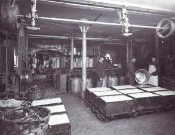 |
|
Den sista stora ombyggnaden gjordes 1923. Den låga längan i den gamla fähusdelen utmed Bondegatan höjdes till två våningar och hela den gamla fägården byggdes över med ett tak med lanterniner. Sedan kunde man inte bygga till mera. Huset räckte inte. 1929 flyttade hela fabriken till Alvik. Vid den tiden höll Skansen på att bygga upp sitt Stadskvarter. En av dem som arbetade med det var Gösta Selling. Han hade redan som ung varit på besök i det Backmanska hemmet i Tottieska malmgården och han visste hur mycket som där fanns bevarat av den gamla 1700-talsinredningen.Nu kom den kunskapen väl till pass. I Fataburen 1931 och 1937 har han berättat om hur det gick till att rädda det bästa av malmgården upp till Skansen. Att flytta hela var fullständigt omöjligt. Dels fanns det nästan inte något av original kvar i den fabriksomändrade delen. Dels skulle hela gården ha varit alldeles för stor för att passa in i skansenplanen. |
Med donatorers hjälp gick det att rädda det väsentliga av Charles och Maria Totties hem till eftervärlden. På så vis gick Charles Totties önskan om fideikommiss åtminstone delvis i uppfyllelse.
Där malmgården legat med sin trädgård växte hyreshusen omedelbart upp. Stockholms stadsstatistiska kontor gjorde en bostadsräkning kring 1930. Där konstateras att i slutet av 1935 låg på den gamla Barnängsbacken 31 hyreshus med 1 428 lägenheter och i dem bodde 4 352 personer.